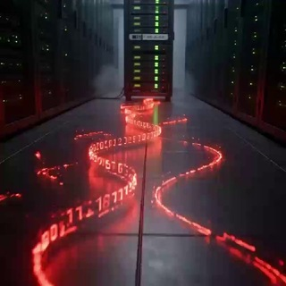

На конференции ACM CCS 2026 команда из Массачусетского университета (Amherst), Колорадского университета и проекта Great Firewall Report (GFW Report) представила CircumVolve — систему, которая использует большую языковую модель как «оператор мутации» в эволюционном цикле. Агент генерирует код, манипулирующий сетевыми пакетами, прогоняет его против симулятора цензуры и реальных точек наблюдения, получает оценку успеха и улучшает следующую итерацию. Идея знакома по AlphaEvolve и FunSearch, но впервые применена к целого класса задач — обходу глубокой инспекции трафика (DPI). Релиз анонсирован 16 ноября 2026 года.
По данным самой публикации, CircumVolve обнаружил 47 различных стратегий обхода на пяти протоколах — DNS, TCP/IP, HTTP, TLS и QUIC; из них 27, по оценке авторов, ранее не были описаны в литературе. В разбивке по странам: 34 обхода против китайского файрвола, 20 — против иранского, 17 — против пакистанского и 10 — против казахстанского, затронуты все тестировавшиеся протоколы в каждой стране. Агент работает на GPT-5.1: полная «эволюционная» проверка из 100 итераций стоит в среднем около 10 долларов, а медианная стоимость до первого успешного обхода — меньше одного доллара для всех протоколов.
Раньше автоматизированный поиск обходов упирался в жёсткую грамматику: машины перебирали только заготовки. Здесь же стратегия — это обычная программа, а значит модель может придумывать произвольные манипуляции, вплоть до сложных кодировок и фрагментации пакетов. Для безопасности картина двусторонняя: те же механизмы, что помогают тестировщикам и правозащитным проектам находить слабые места фильтрации, доступны и тем, кто хочет прятать вредоносный трафик. Авторы публикуют код и открытый датасет, отдельно обсуждая этику исследования.
Работа вписывается в заметный тренд года: ИИ-агенты переходят из режима «ассистент программиста» в режим автономного исследователя с замкнутым циклом «гипотеза — эксперимент — обратная связь». Цензура и антицензура — одна из первых областей, где такой агент стабильно выдаёт новый научный результат буквально за чашку кофе и символические computing-центы. Коммерческие DPI-вендоры, между тем, только недавно начали массово докладывать ИИ-фильтры поверх классических правил — судя по результатам CircumVolve, правилам сейчас придётся догонять.